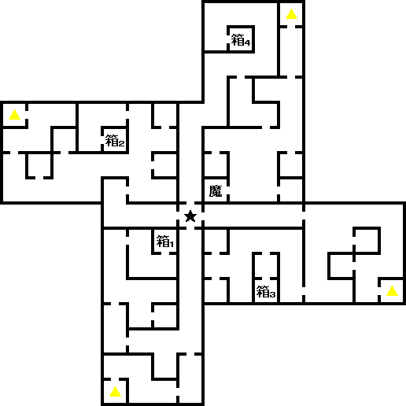

- 예소드
- 예트라 회랑
- 호드의 거리
- 네챠크의 거리
- 티페레트
- 중요 분기점1
- 중요 분기점2
예소드
예소드는 인면석 북서쪽에 있다. 안에 있는 터미널에 들어가면 STEVEN이 마계에 터미널을 사용 가능하게 해준다.
마계에는 회복의 샘이 있는데 각 속성에 대응된다. 기존의 메시아 교회, 리페어 가레지, 가이아 신전과 같은 역활을 한다.
상점도 있지만 특별한 것은 없으니 밖으로 나가 동쪽에 있는 예트라 회랑으로 가자.
예트라 회랑

예트라 회랑 B2F
- 箱1 : 운의 향
- 箱2 : 봉마의 방울(封魔の鈴)
- 箱3 : 체력의 향
- 箱4 : 힘의 향
- 魔 : 펄
- ★ : 마왕 헤카테
마계의 첫 번째 회랑에 왔다. 마계에는 9개의 지역과 3개의 회랑이 있다. 각 지역에 갈려면 회랑을 통과해야 하는 구조로 되어 있다. 이 예트라 회랑은 호드(서), 티페레트(북), 네챠크(동), 예소드(남) 지역에 연결되어 있다.
예소드 방면에서 오면 B2F의 남쪽으로 오게 된다. 중앙에는
BOSS:마왕 하카테가 있는데 월령이 신월일 때만 전투가 가능하다. 쓰러뜨리면 다른 지역에 갈 수 있게 된다.
우선 예트라 회랑 서쪽 방향의 호드 지역으로 가자.
호드의 거리
호드의 거리 북서쪽에서
BOSS:사룡 티아마트를 쓰러뜨리고 「아인의 열쇠(アインの鍵)」를 입수한다. 다시 예트라 회랑으로 가서 동쪽의 네챠크로 가자.
네챠크의 거리
여기서도 보스만 처리하면 된다. 무기점, 방어구점이 있는 통로를 따라가면 끝에
BOSS:요마 마스터테리온이 있다. 화염이 약점이며, 이 보스는 만월일 때 전투가 가능하다.
쓰러뜨리면 「라메드의 열쇠(ラメドの鍵)」를 입수. 다시 예트라 회랑을 통해 북쪽의 티페레트에 가자.
티페레트
예트라 회랑~티페레트 통로(1F)에는 마지막 CB가 있다. 경품으로 원월도(円月刀)라는 좋은 검을 얻을 수 있다.
출구에서 두개의 열쇠를 사용해 문을 열 수 있다. 밖으로 나와 남쪽에 가보면 페텔센과 세이렌을 볼 수 있다.
우선 티페레트의 거리에 가서 터미널을 등록&필수로 세이브를 하자.
여기까지 NEUTRAL로 진행했으면 이 시점에서 따로 세이브를 해두자. 앞으로 있을 선택지에 따라서 분기가 갈리게 되니 빠르게 모든 엔딩을 볼 사람은 꼭 세이브 해두길 바란다.
거리 북동쪽의 베리아 회랑으로 가면 대마왕 루시퍼를 섬기는 자. 고모리가 와서 케텔 성으로 데려간다.
중요 분기점1
여태까지 바에서 만났던 루이 사이퍼의 정체는 바로
대마왕 루시퍼였다.
루시퍼는 사탄과 싸울 결의가 있다면 다시 케텔 성에 오라고 한다. 고모리가 다시 티페레트 지역으로 데려다 주고, 곧바로 가브리엘을 만난다. 자인이 만나고 싶다며 에덴으로 데려간다. 자인은 진정한 천년왕국을 만들기 위해 주인공의 협력을 바라고 있다. 여기서 중요한 분기가 생긴다.
| 속성 분기점 |
| 속성이 극-LAW라면... |
강제로 협력에 응하게 된다. LAW 루트 확정 |
| 속성이 극-CHAOS라면... |
강제적으로 에덴에서 추방 |
| 협력에 응하면... |
LAW 루트 확정 |
| 협력을 거절하면... |
에덴에서 추방 |
LAW루트 확정이 아니라면 센터로 추방 당하고...다시 베리아 회랑으로 가야 된다.
중요 분기점2
베리아 회랑 입구에
BOSS:마왕 아스타로트가 나타난다.(모든 속성 공통)
쓰러뜨리면 루시퍼가 나타나고 또다시 분기 선택지(
LAW 루트 확정이라면 선택지는 나타나지 않는다)
| 속성 분기점 |
| 속성이 극-CHAOS라면... |
CHAOS 루트 확정 |
| 협력에 응하면... |
CHAOS 루트 확정 |
| 협력을 거절하면... |
NEUTRAL 루트 확정 |